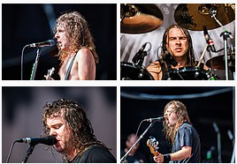

Airbourne es una banda de hard rock originaria de Warrnambool, Victoria, Australia. Editaron su primer EP en 2004, Ready to Rock, después de conseguir una consolidada popularidad en su ciudad de origen debido a sus numerosos conciertos en los locales de la zona.
| Año | Disco |
|---|---|
| 2008 | Runnin' Wild |
| 2010 | No Guts. No Glory |
| 2013 | Black Dog Barking |
| 2016 | Breakin' Outta Hell |
| 2019 | Boneshaker |
| "Runnin' Wild" fue el álbum más exitoso | |